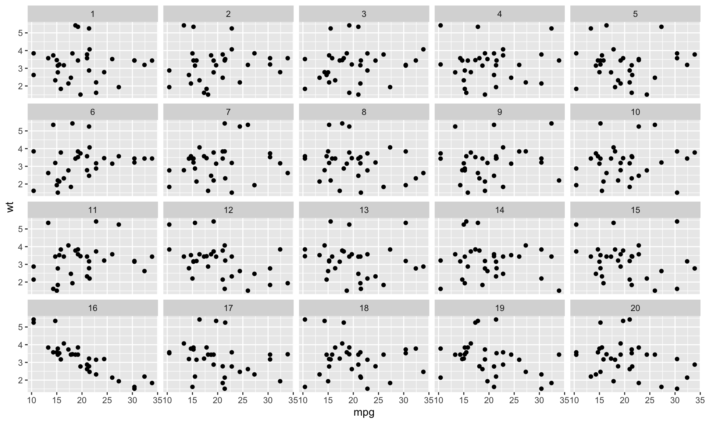
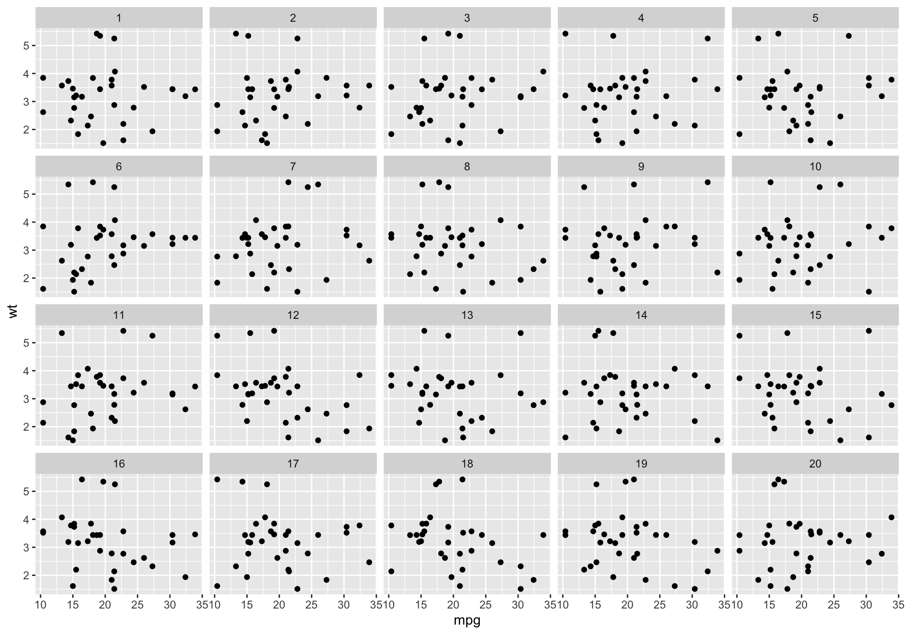
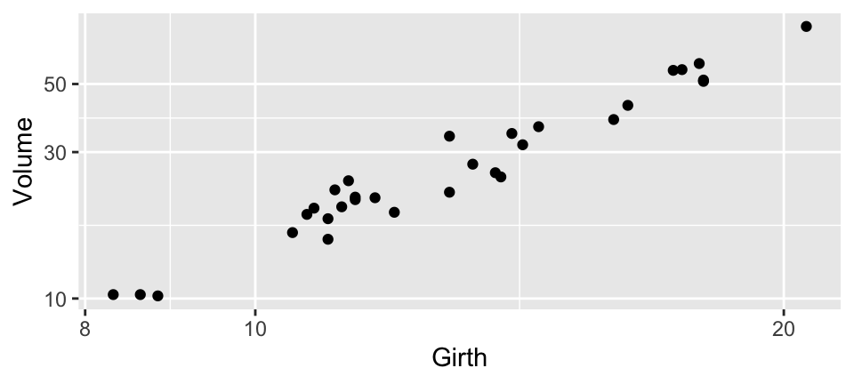
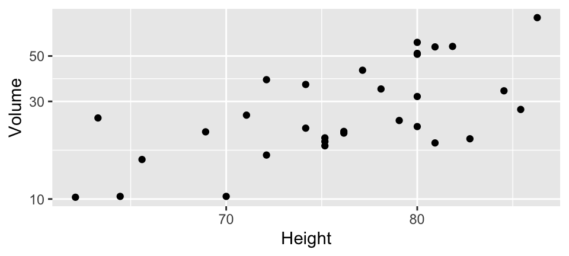
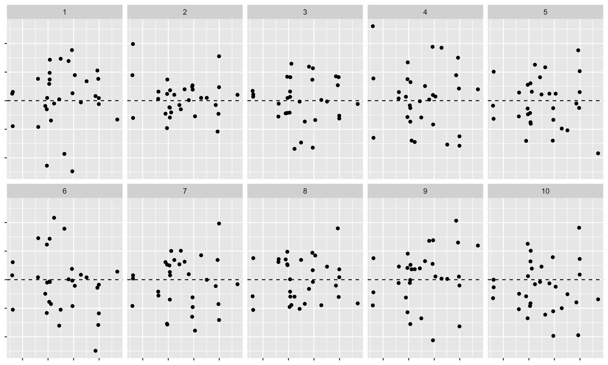

Visual inference
Lecture 16
Duke University
STA 113 - Fall 2023
Warm-up
Announcements
- Project 2 proposal feedback delayed, will have it for you by the end of tonight!
- Who is in class on Tuesday?
Setup
Now you see me, now you don’t
One of the pictures is a photograph of a painting by Piet Mondrian while the other is a photograph of a drawing made by an IBM 7094 digital computer. Which of the two do you think was done by the computer?

A. M. Noll, “Human or machine: A subjective comparison of piet mondrian’s”composition with lines” (1917) and a computer- generated picture,” The Psychological Record, vol. 16, pp. 1–10, 1966.
Aside: Who is Piet Mondrian?

Apophenia
What is apophenia?
The tendency to perceive a connection or meaningful pattern between unrelated or random things.

Visualization, statistical inference, visual inference
- Visualization provides tools to uncover new relationships, tools of curiosity, and much of visualization research focuses on making the chance of finding relationships as high as possible
- Statistical inference provides tools to check whether a relationship really exists (tools of skepticism) and most statistics research focuses on making sure to minimize the chance of finding a relationship that does not exist
- Testing: Is there a difference?
- Estimation: How big is the difference?
- Visual inference bridges these two conflicting drives to provide a tool for skepticism that can be applied in a curiosity-driven context - Testing: Is what we see really there, i.e., is what we see in a plot of the sample an accurate reflection of the entire population?
Hypothesis testing as a court trial
Null hypothesis, \(H_0\): Defendant is innocent
Alternative hypothesis, \(H_A\): Defendant is guilty
Present the evidence: Collect data
- Judge the evidence: “Could these data plausibly have happened by chance if the null hypothesis were true?”
- Yes: Fail to reject \(H_0\)
- No: Reject \(H_0\)
Hypothesis testing framework
Start with a null hypothesis, \(H_0\), that represents the status quo
Set an alternative hypothesis, \(H_A\), that represents the research question, i.e. what we’re testing for
Conduct a hypothesis test under the assumption that the null hypothesis is true and calculate a p-value (probability of observed or more extreme outcome given that the null hypothesis is true)
- if the test results suggest that the data do not provide convincing evidence for the alternative hypothesis, stick with the null hypothesis
- if they do, then reject the null hypothesis in favor of the alternative
Potential errors
Type 1 error (false negative): Acquit / reject \(H_0\) when you shouldn’t
Type 2 error (false positive): Falsely convict an innocent / fail to reject \(H_0\) when you shouldn’t
Costs of these errors vary based on the severity of the consequences
Statistical vs. visual inference
Statistical
- Test statistic
- p-value compared to significance level
Visual
- Plot of the data
- Humans’ picking an “innocent” out of a series of null plots
Visual inference with a lineup
The lineup protocol
Plot of the real data is randomly embedded amongst a set of null plots
Matrix of plots is known as a lineup
Null plots are generated by a method consistent with the null hypothesis
The lineup is shown to an observer. If the observer can pick the real data as different from the others, this puts weight on the statistical significance of the structure in the plot.
The
lineup()function from the nullabor package returns a set of generated null datasets and the real data embedded randomly among these null datasets
Using nullabor::lineup()
- Generating null plots:
- Option 1: Provide a method of generation and let the
lineup()function generate them - Option 2: Generating the null datasets yourself and pass them to the
lineup()function
- Option 1: Provide a method of generation and let the
- Position of the real dataset is hidden by default
- Decrypt to find out which plot is the real dataset
Will the real mtcars please stand up?
The making of the lineup I
Step 1. Permute the data
The making of the lineup II
Step 2. Peek at the permuted data
mpg cyl disp hp drat wt qsec vs am gear carb .sample
...1 10.4 6 160 110 3.90 2.620 16.46 0 1 4 4 1
...2 21.4 6 160 110 3.90 2.875 17.02 0 1 4 4 1
...3 14.7 4 108 93 3.85 2.320 18.61 1 1 4 1 1
...4 15.5 6 258 110 3.08 3.215 19.44 1 0 3 1 1
...5 30.4 8 360 175 3.15 3.440 17.02 0 0 3 2 1
...6 15.0 6 225 105 2.76 3.460 20.22 1 0 3 1 1The making of the lineup II
Step 2. Peek at the permuted data
n = 20 by default
The making of the lineup III
Step 3. Plot the permutations
Decrypt the lineup
Visual inference with a Rorschach
The Rorschach protocol
- The Rorschach protocol is used to calibrate the eyes for variation due to sampling
- Plots generated corresponds to the null datasets, data that is consistent with a null hypothesis
rorschach()function returns a set of null plots which are shown to observers to calibrate their eyes with variation
Using nullabor::rorschach()
Generating null plots: Provide a
methodof generation and let therorschach()function generate themProvide the
truedata setSet
n, total number of samples to generate (n = 20by default)Set
p, probability of including true data with null data (p = 0by default)
Train your eyes to spot the real mtcars

The making of the rorschach I
Step 1. Permute the data
The making of the rorschach II
Step 2. Peek at the permuted data
mpg cyl disp hp drat wt qsec vs am gear carb .sample
1 10.4 6 160 110 3.90 2.620 16.46 0 1 4 4 1
2 21.4 6 160 110 3.90 2.875 17.02 0 1 4 4 1
3 14.7 4 108 93 3.85 2.320 18.61 1 1 4 1 1
4 15.5 6 258 110 3.08 3.215 19.44 1 0 3 1 1
5 30.4 8 360 175 3.15 3.440 17.02 0 0 3 2 1
6 15.0 6 225 105 2.76 3.460 20.22 1 0 3 1 1The making of the rorschach II
Step 2. Peek at the permuted data
n = 20 by default
The making of the rorschach III
Step 3. Plot the permutations
Decrypt the rorschach
In this particular case there’s nothing to decrypt since
p(probability of including true data with null data) is set to 0If
pis higher than 0, and the true null is included, you get the decryption key
Generating the null data
Generating the null data
- By permuting a variable (what we’ve done so far with
mtcars) - With a specific distribution
- With null residuals from a model
- With null data outside of nullabor (we won’t get into this, but see here for more)
Generate null data with a specific distribution
- The
null_dist()function takes as input a variable name of the data and a particular distribution - This variable in the data is substituted by random generations of the particular distribution
- The different distributions include beta, cauchy, chi-squared, exponential, f, gamma, geometric, log-normal, lognormal, logistic, negative binomial, normal, poisson, t, and weibull
- Parameters of the distributions are estimated from the given data (default) or can be provided as a list
null_dist()returns a function that generates a null data set given the data
Case study: Heights of adults
The following histogram shows the distribution of heights of 507 physically active individuals (openintro::bdims$hgt). Do the heights of these individuals follow a normal distribution?
Spot the real data
Which of the following is the plot of the real data? (Note: A different binwidth than the previous plot is used.)
Code: Generate null data with a specific distribution
Generate the null distribution
Code: Decrypt
Generating the null data with residuals from a model
null_lm()takes as input a model specification formula as defined bylm()and method for generating null residuals from the modelThree built in methods for different (and valid) methods to generate null data when fitting a linear model:
method = "pboot"method = "boot"method = "rotate"
null_lm()returns a function which given the data generates a null dataset
Case study: Black cherry trees
Data measures the diameter, height and volume of timber in 31 felled black cherry trees (datasets::trees)
Summary
── Data Summary ────────────────────────
Values
Name datasets::trees
Number of rows 31
Number of columns 3
_______________________
Column type frequency:
numeric 3
________________________
Group variables None
── Variable type: numeric ──────────────────────────────────────────────────────────────────────────────────────────────────────────────────────────────────────────────────────────────────────────────────────────────────────────────────────────────────────────────────────────────────────────────────
skim_variable n_missing complete_rate mean sd p0 p25 p50 p75 p100 hist
1 Girth 0 1 13.2 3.14 8.3 11.0 12.9 15.2 20.6 ▃▇▃▅▁
2 Height 0 1 76 6.37 63 72 76 80 87 ▃▃▆▇▃
3 Volume 0 1 30.2 16.4 10.2 19.4 24.2 37.3 77 ▇▅▁▂▁Case study: Black cherry trees
Plot


Fit the model
# A tibble: 3 × 5
term estimate std.error statistic p.value
<chr> <dbl> <dbl> <dbl> <dbl>
1 (Intercept) -6.63 0.800 -8.29 5.06e- 9
2 log(Girth) 1.98 0.0750 26.4 2.42e-21
3 log(Height) 1.12 0.204 5.46 7.81e- 6Augment the model
trees_aug <- as_tibble(datasets::trees) |>
mutate(
.resid = residuals(trees_fit),
.fitted = fitted(trees_fit)
)
trees_aug# A tibble: 31 × 5
Girth Height Volume .resid .fitted
<dbl> <dbl> <dbl> <dbl> <dbl>
1 8.3 70 10.3 0.0219 2.31
2 8.6 65 10.3 0.0343 2.30
3 8.8 63 10.2 0.0138 2.31
4 10.5 72 16.4 -0.0106 2.81
5 10.7 81 18.8 -0.0430 2.98
6 10.8 83 19.7 -0.0420 3.02
7 11 66 15.6 -0.0557 2.80
8 11 75 18.2 -0.0443 2.95
9 11.1 80 22.6 0.0822 3.04
10 11.2 75 19.9 0.00926 2.98
# ℹ 21 more rowsTest
- Hypotheses:
- \(H_0\): Errors are \(NID(0, \sigma^2)\)
- \(H_A\): Errors are not \(NID(0, \sigma^2)\)
- Visual statistic: Residuals plot (residuals vs. fitted)
- Null distributions: Generate residuals from random draws from \(N(0, \hat{sigma}^2)\) using the nullabor package
Lineup
Which one is the real residuals plot?

Decrypt
The visual inference test
The visual inference test
- Notation:
- \(n\): number of independent participants
- \(X\): number of participants who detect the data plot
- \(x\): observed value of \(X\)
- \(m\): number of plots
- \(p\): the probability of selecting the data plot
- Hypotheses:
- \(H_0: p = 1 / m\) - The probability of the data plot being selected is \(1 / m\) (same as all other plots)
- \(H_A: p > 1 / m\) - The probability of the data plot being selected is greater than \(1 / m\)
- Under \(H_0, X \sim B(n, 1/m)\). Then, visual inference p-value:
\[ p(X \ge x) = 1 - P(X \le x - 1) = \sum_{k = x}^n {n \choose k} \frac{(m - 1)^k}{m^n} \]
- In R: \(P(X \le x)\) =
pbinom(x, n, p)
Calculating p-values
We did three lineup tests today, where - \(x\) is the number of people who spotted the real data and - \(n\) is the number of people voting
Let’s calculate the p-values
- Spot the real
mtcars(n = 20)
- Spot the real
bdims::hgt(n = 10)
- Spot the real residuals of
treesmodel (n = 10)
Acknowledgements
Acknowledgements
- Statistical inference for exploratory data analysis and model diagnostics by Andreas Buja , Dianne Cook , Heike Hofmann , Michael Lawrence , Eun-Kyung Lee , Deborah F. Swayne, and Hadley Wickham
- Graphical Inference for Infovis by Hadley Wickham, Dianne Cook, Heike Hofmann, and Andreas Buja
- Using computational tools to determine whether what is seen in the data can be assumed to apply more broadly by Emi Tanaka
- Extending beyond the data, what can and cannot be inferred more generally, given the data collection by Emi Tanaka
- The nullabor package